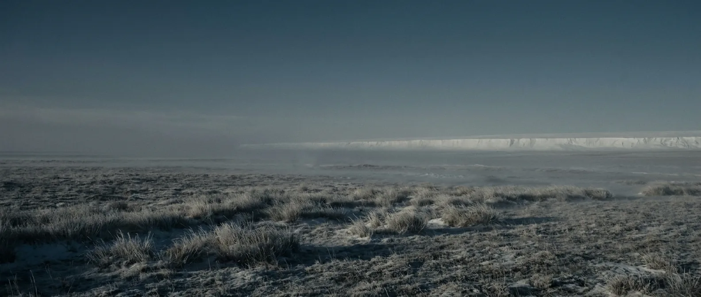
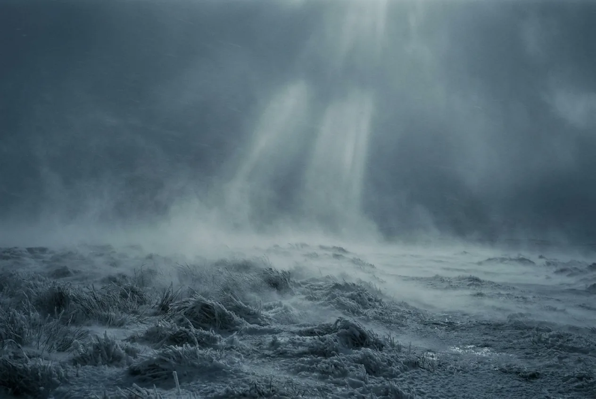
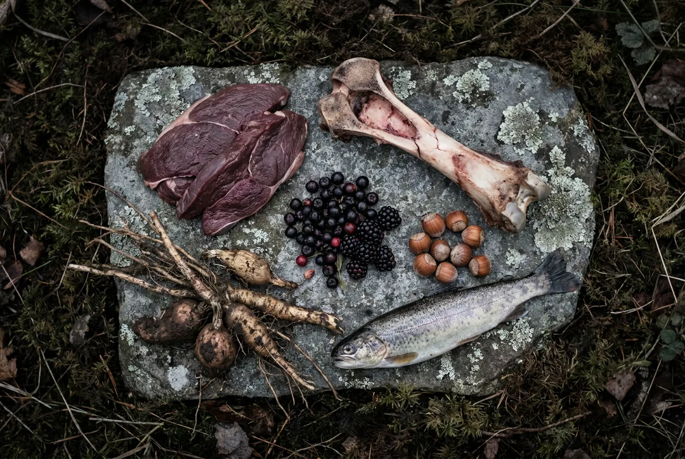

Six hundredths of one percent of Earth's history, and it contains everything you have ever heard of. Ice sheets advance and retreat roughly every hundred thousand years. Somewhere in the middle of it, a primate in East Africa starts making better tools than it needs.
Not because it is gentle — a glacial maximum is brutally cold and the megafauna is genuinely dangerous — but because this is the environment that selected you. Every instinct you have is calibrated for this world.

Scale 0–40%. Exactly what you are breathing. It took 4.5 billion years to arrive at this number and it has been stable for the entire existence of your species.
Scale 0–4,000 ppm. Cycling between 180 ppm at glacial maxima and 280 in warm intervals, read directly from air bubbles in Antarctic ice. Today's ~425 ppm is outside the entire 800,000-year record.
Scale −130 to +250 m. Enough water locked in ice to walk from Siberia to Alaska, from Britain to France, and from mainland Asia most of the way to Australia.
Driven by orbital variation in eccentricity, tilt and precession. Roughly 90,000 years of ice, 10,000 of warmth. You have spent your whole life in one of the short warm intervals.
Scale 0–24 h. Home. The Moon is still receding at about 3.8 cm a year, so this is the longest day Earth has ever had.
Neanderthals, Denisovans, Homo erectus, Homo floresiensis, Homo naledi. For most of this era Earth carries several human species at once. That is the normal condition; ours is the anomaly.

At a glacial maximum, mid-latitude winters are severe and the growing season is short. This is the one era on the site where clothing is not a detail — it is the technology the whole occupation depends on.
Mammoth, woolly rhino, cave lion, short-faced bear, Smilodon. Large, cold-adapted, and in the Americas entirely unfamiliar with humans. Dangerous, and also the largest concentration of calories on the landscape.
Reverse the usual worry. You carry a modern microbiome and modern respiratory viruses into populations with no exposure to them. Every other page on this site notes that ancient pathogens cannot touch you. Here, yours can touch them.
And they are as intelligent as you are, with far better local knowledge and toolkits refined over thousands of years. Whether that is the best or worst thing that happens to you depends entirely on the encounter.
Life expectancy here is around 30 to 35 years, dragged down by infant mortality; reach adulthood and 60 is common. That is not the planet failing you. That is simply what being human costs without medicine.
You do. This is the only era on the site that was built for you, by you.

Yours exactly.
Everywhere, and glacial meltwater is as clean as water gets.
Megafauna, fish, birds, berries, nuts, roots. The mammoth steppe supports more animal biomass per hectare than the tundra that replaced it.
Universal. Every human population here already has it and has had it for hundreds of thousands of years.
Hide tents, mammoth-bone huts, caves. Some of it engineered better than you would manage on a first attempt.
Yes, for the first and only time on this site. Whether that improves your odds is the interesting question.